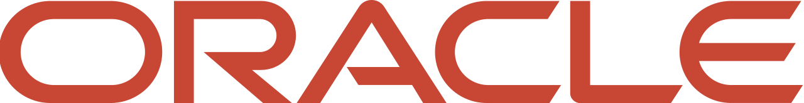
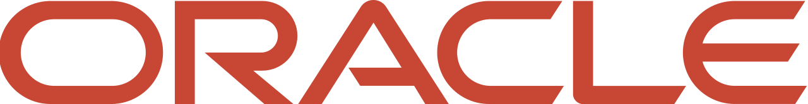

XV Concurso Donald Knuth
Somos el Club de Algoritmia de la Escuela Superior de Cómputo del Instituto Politécnico Nacional, y estamos emocionados de presentarte este emocionante evento anual que celebra la pasión por la programación y los desafíos algorítmicos.
Nuestra Historia
Desde hace 15 años, hemos estado dedicados a fomentar el amor por la programación y el pensamiento algorítmico entre estudiantes y entusiastas de la programacion competitiva.
A lo largo de los años, hemos crecido y evolucionado, y el Concurso "Donald Knuth" se ha convertido en una tradición en nuestra escuela, atrayendo a mentes curiosas y creativas de toda la comunidad.
Nuestra Misión
Nuestra misión es inspirar, educar y conectar a jóvenes programadores a través de desafíos emocionantes y enriquecedores.
El concurso no solo pone a prueba tus habilidades técnicas, sino que también fomenta el trabajo en equipo, la resolución de problemas y la creatividad.
Creemos que la programación competitiva es una oportunidad para aprender, crecer y forjar amistades duraderas en el mundo de la programacion competitiva.
Nuestro Compromiso
Como organizadores del Concurso "Donald Knuth", estamos comprometidos con brindar una experiencia inolvidable a todos los participantes.
Trabajamos arduamente para crear problemas desafiantes y estimulantes que inspiren a los concursantes a superar sus límites y alcanzar nuevas alturas en su comprensión de los algoritmos y la programación.
Además, fomentamos un ambiente de trabajo colavorativo y respeto mutuo, donde cada mente inquisitiva encuentra su lugar.
Únete a Nosotros
Si compartes nuestra pasión por la programación y estás listo para aceptar el desafío, te invitamos a unirte a nosotros en la 15va Edición del Concurso "Donald Knuth".
Prepárate para sumergirte en un mundo de algoritmos intrigantes, soluciones ingeniosas y amistades duraderas.
Esperamos verte en la Escuela Superior de Cómputo en una experiencia que seguramente dejará una huella en tu viaje como programador.
¡Esperamos verte en el Concurso "Donald Knuth" y compartir juntos la emoción de la programación competitiva y el espíritu de Donald Knuth, un pionero en el campo de la informática y la teoría de algoritmos!
Sábado, 26 de Agosto
Los horarios están sujetos a cambios.Por favor, asegúrese de consultar la información actualizada el día del evento.
08:30 - 09:30
Registro de Participantes
Todos los participantes deben completar el proceso de registro en el área designada.
09:30 - 10:00
Acomodo de Participantes
Orientación y acomodo de los participantes en sus respectivos espacios asignados.
10:00 - 10:30
Concurso de Práctica
Una breve sesión de concurso de práctica para familiarizar a los participantes con el entorno y los procedimientos del evento.
10:30 - 15:30
XV Concurso Anual
Inicio oficial del XV Concurso Anual "Donald Knuth".
Los equipos competirán en un desafío de programación intensivo y desafiante.
15:30 - 16:30
Receso para la Comida
Un tiempo designado para que los participantes disfruten de un almuerzo preparado especialmente.
16:30 - 17:00
Ceremonia de Premiación y Clausura
Reconocimiento de los logros sobresalientes de los equipos y participantes.
Clausura oficial del concurso, marcando el final de la competencia y del evento.
Agradecemos su participación y su compromiso con la excelencia en la programación competitiva.
Esperamos que disfruten de este día lleno de desafíos y oportunidades de aprendizaje.
¡Les deseamos a todos los equipos la mejor de las suertes en el XV Concurso Anual "Donald Knuth"!
La ubicación específica de cada actividad será indicada en el lugar del evento.
Si tiene alguna pregunta o necesita asistencia durante el evento, nuestro personal estará disponible para ayudarle.


 

Contactanos a traves de nuestras redes sociales
Ubicacion
Unidad Profesional Adolfo
López Mateos, Av. Juan de Dios Bátiz,
Nueva Industrial Vallejo, Gustavo A. Madero,
07320 Ciudad de México, CDMX
Contactanos